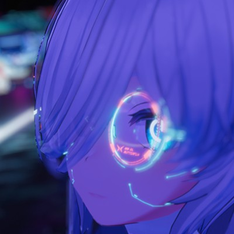

About
模型部の手下となりしプログラマー、たいと愉快な仲間たちの同人サークル。もともとはWSTubeの開発のために結成された。
読み方は、"だぶるそふと"、"わそふと"、"わっふーそふと"など諸説あり。
ソフト開発や動画制作をしたりしている。最近DTMに手を出そうと付属サークル、「紅組」を結成。
自信を持ってWSOFTのものといえれば媒体は問わない。そういう意味ではプロフェッショナルの集合体。
ないならないでいいけど、あれば少しだけうれしい。そんなコンテンツを創っていきたい。そんなサークル。

People


matsuzen
紅組Developer音楽作ったり音ゲーやFPSしたりアニメ観たり3Dモデルやゲーム作ったりたまに動画作ったりプログラミングしたり色々なんでもして生きてる人。 WSTubeの発案者。AliceProjectのオーナーでVRChatter。
@matsuzen_VR ホームページ matsu-zen matsuzen
Orange
紅組Affairs自称パッとしない人。紅組の組長で最近GitHubのPullRequest通してくれない。主に校閲や相談などの事務担当。学校では生徒会長をやってるとかやってないとかいわれているが真偽は不明。
@orange46214078 nano-aoi
naoyuki
ObserverAffairs隣のエニグマティックビートボクサー。APEXタノヒィ。pcでやっています。iPadたのひぃ。※主は筋肉0.42のBMI値21の健康的なおにいさんです。模型始めました。なぜかGitHubアカウントを持っている。
@nanaue0009 naoyuki0009History
| 2017.3 | あみうはと名付けたブログを友人数名と開設 |
| 2017.10 | あみうはの活動としてソフトウェア開発を開始。T-SOFTを結成 |
| 2018.10 | IEコンポーネントブラウザ、WebSailingの初期版を公開。 |
| 2019.3 | T-SOFTからWSOFTへと名義を変更。あみうはから独立。 |
| 2019.3 | コードネーム'yt'でWSTubeが開発開始。この開発からmatsuzen氏が参加し、同人サークルとなる。（某校PC部デジタル映像研究室開設） |
| 2019.4 | ドメイン:websailing-net.ddo.jpで、WSOFTサーバー（初代）の稼働開始。 |
| 2019.7 | サーバーデータ消失。これによりNXシリーズの開発開始。 |
| 2020.3 | WSOFTScriptの開発開始。 |
| 2020.4 | 某校PC部デジタル映像研究室がWSOFTと統合され、WSOFTデジタル映像研究室となる。 |
| 2020.8 | ドメイン:wsoft.tkで、WSOFTサーバー（2代目）の稼働開始。 |
| 2020.10 | WSTube、WebSailingGL、WSOFTアカウント（旧バージョン）のサポートおよび運用が終了。 |
| 2021.6 | AliceScriptの開発開始。 |
| 2021.9 | ドメイン:wsoft.gqで、WSOFTサーバー（3代目）の稼働開始。 |
| 2022.4 | WSOFTダウンロードセンターの運用開始。 |
| 2022.8 | WSOFTデジタル映像研究室を発展的に改組し紅組を結成。Orange氏が組長に就任。 |
| 2022.9 | ドメインをwsoft.wsへと移行。 |
| 2022.10 | WSOFTのホームページを大規模リニューアル。 |
| 2022.11 | WSOFTDocsの運用開始。 |
| 2022.12 | 初の取り組みであるWSOFT AdventWeek 22を開催。 |